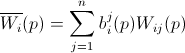
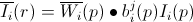
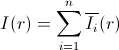
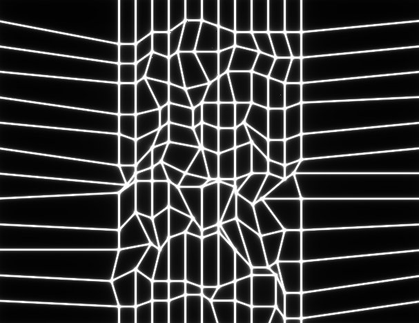
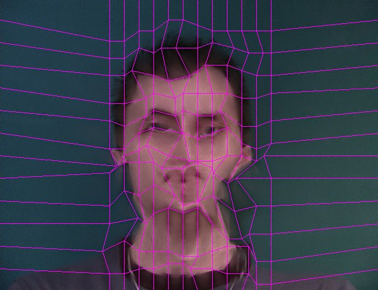
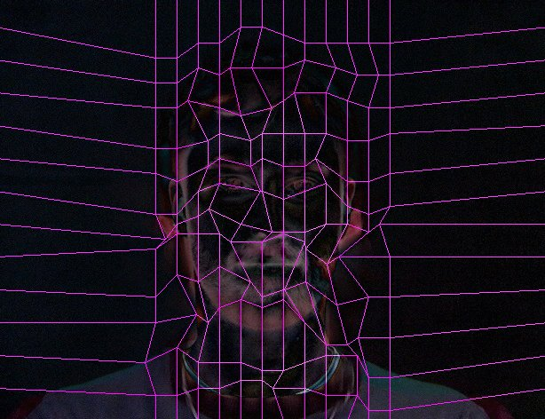
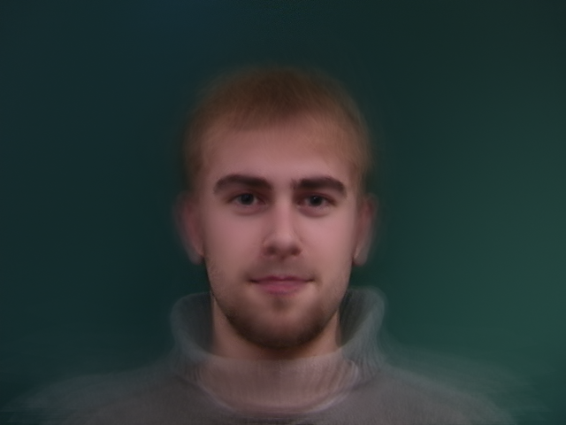
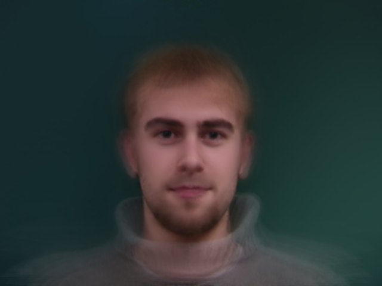

Introduction
In this homework, we implement the tool of morphing in C++ with openCV. We implement many kinds of functions. For interpolation part, there are direct interpolation, bilinear interpolation and gaussian interpolation. We also provide multi-source morphing(polymorphing) and auto-face detection morphing.
The hierarchy of our source is
./morph main.cpp morph_lib.h morph_lib.cpp parser.h parser.cpp Makefile
./polymorph main.cpp morph_lib.h morph_lib.cpp parser.h parser.cpp Makefile
./brutelee main.cpp Makefile
The main.cpp is a demo program, morph_lib.* and parser.* are morphing and parsing function respectively.
Two images morphing
The morphing is the combination of warping and cross-dissolving. The later part is easy. We implement warping based on Thaddeus Beier, Shawn Neely, Feature-Based Image Metamorphosis, SIGGRAPH 1992. The framework is
- Parse data
- Warp source image
- Warp destination image
- Cross-dissolve the above 2 images
-
bool ParseParameters( Mat &img_src, Mat &img_dst, PARA ¶, int argc, char *argv[] )We use this function to parse the command line. PARA is a class to represent the related parameters. The return value represents whether the command is legal or not.
-
int ParseLine( Mat &lines, char *filename )
In ParseParameters, it calls this function to parse the lines used during the morphing. The format of line file is as follows:
<#path><type><x><y><point#><conneted from><connect to>
Since the size betwwen the image may be different, the value of x and y are scaled from 0 to 1.
-
Mat Warping( Mat &img_src, PARA ¶, Mat line_src, Mat line_dst, int rows, int cols )
Given the corresponding parameters and src/dst images, it will generate the warped image. The algorithm we implement is Feature-Based Image Metamorphosis as in cyy's slide. For each pixel, we use the line segment to determin which pixel in the source image is corresponding to it.
-
Vec3f BilinearInterpolation( Mat &img_src, Qfloat x, Qfloat y, Qfloat sigma )
This function peovide bilinear interpolation, which is used during warping.
-
Vec3f GaussianInterpolation( Mat &img_src, Qfloat normal_x, Qfloat normal_y, Qfloat sigma )
This function peovide gaussian interpolation, which is used during warping.
-
Vec3f GaussianKernelInterpolation( Mat &img_src, Qfloat normal_x, Qfloat normal_y, Qfloat sigma )
This function peovide optimized gaussian interpolation, which is used during warping, more details are in optimization section.
Other details
- We also implement the direct interpolation embedded in Warping function.
- To avoid we can not find the corresponding pixel in the source image for the the pixels at surrounded to the boundary in the destination image(outlier). That is, pixel (1,0) may corrspond to (-1,0) in the source image. However, (-1,0) doesn't exist since it's out of the range. We add a small segment in both source and destination image. Then evry pixel must can find a legal corresponding pixel by this segment.
Polymorphing (Bonus)
We implement the reference paper on the course website "Polymorph: morphing among multiple images", this paper proposed a framework of polymorphing, that is,



Auto Face Morphing (Bonus)
We read A work minimization approach to image morphing by Peisheng et-al. However, they use bi-spline wrapping, so we have to modify the algorithm do work on feature-based wrapping.
In the first trial we tried to put some random features, and brutely adjust each end point. However, the image will be broken due to non-consistency of features. In the second trial we make grids, and generate feature line from the grid. It works well if each feature line doesn't overlapse. To ensure so, we add some regularization on each step. To make the search fast, we have larger grid density in the center. Also, we seperate the weight of each grid to make the result accumulative to all feature lines.
Algorithm
- Align two image by simple translation (search for min euclid distance)
- Generate grid
- Construct First Wrapping
- For each grid:
- Remove wrapping effect to all neighbor grids
- For each search directions:
- Move the grid along the direction
- Construct Wrapping to all neighbor grid
- cost = color distance + regularization
- If cost < min_cost do update
| Weights | Morphing Result | Diff |
|---|
  
Optimization
Originally, wrapping for one frame takes 5 minutes, which made it less possible to search on features. We made it less then 1 second in the end. The optimization is listed below:
| Action | Result (time per frame) |
|---|---|
| Pre-calc Gauss Function | 5 min to 36 sec |
| Change Gauss function to Direct Map | 36 sec to 12 sec |
| Inline Distance Function | Effects later |
| For Loop Inversion (put feature loop outside) | 12 to 2 sec |
| Use 2 norm in Distance Function ( exclude sqrt ) | 2 to less than 1 sec |
| Row-wise Index on Mat | OpenCV seems had done this for us |
Comparison of Results
The comparisons are based on these 3 images.

Different interpolation
Morph img1 and img2
 
We can find the level of blured is gaussian>bilinear>direct interpolation. It's reasonable because gaussian interpolation takes more surrounding pixels to do weighted average.(We set sigma = 1) and bilinear takes surrounding 4 pixels to average. The execution time is
| Direct | Bilinear | Gaussian |
| 1.079s | 2.180s | 6.841s |
Polymorphing
We warp img1, img2 and img3.

The original 2 image morphing
We can observe that the 3 images version really contains the characristics of 3 images(look at the eyes)
Artifacts
What we have learned
- Using OpenCV
- Write Ajax website